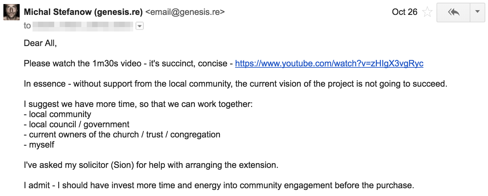
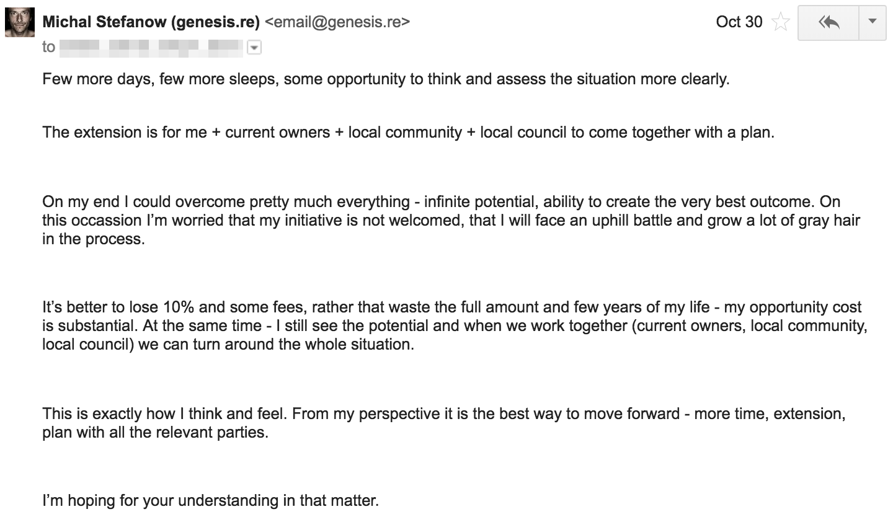
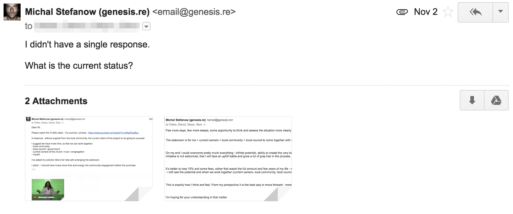
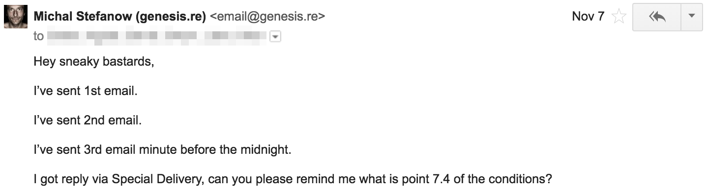
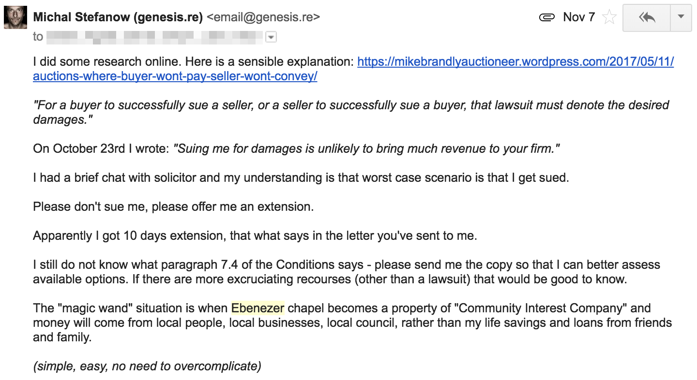
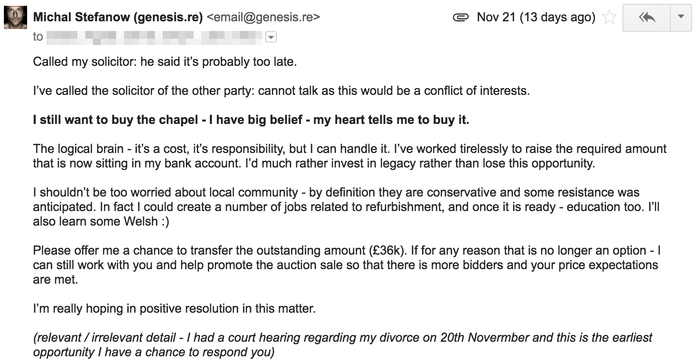
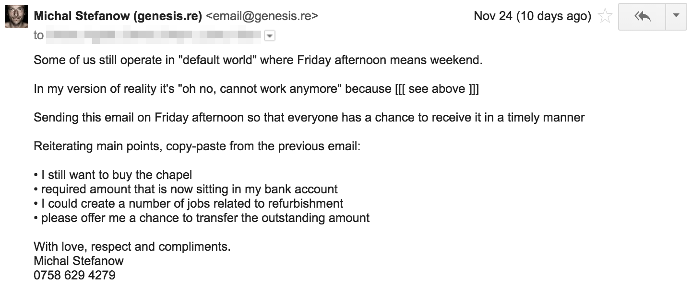
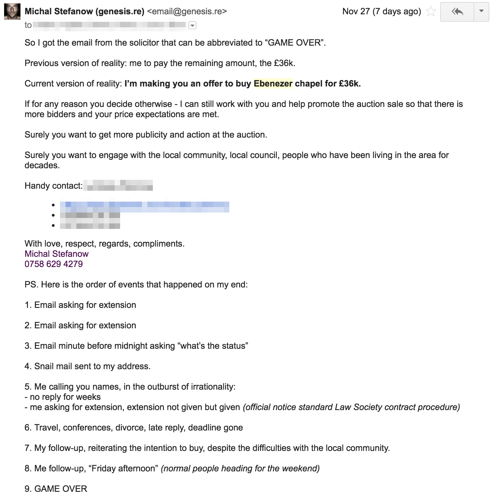

Did it happen for real?
TLDR
Many mistakes. Many lessons. Lost some money, lost some time.
What's gone it's gone, establishing new framework of reality.
Stealth mode next time
Note about privacy
Envisioning better communication protocols.
Publishing email someone sent to me could potentially break copyright laws.
Publishing my own email? Here you are...
Did some research: Is it legal to publish email that someone sent to me? (asked 25 Sep 2015)
Blurred the names and other personally identifiable data.
My side of the story
Received so much hate.
Asked for more time, to better assess the options.
Decided to make the jump and follow the gut, heart, intuition...
Sad trombone - too late!







Reality check
Land of prosperity?
Quote from Wikipedia:
The slate industry was an important employer in Deiniolen, but since the closure of the quarry in 1969, the economy of the village has been in decline
Previous press reports on the projects in the area:
Truth • Honesty • Integrity
Do you want to know what am I planning right now?
I want to know too, I have no idea what I'm doing.
Renegotiating life priorities, figuring out what to do next.
Just don't take me too seriously.
Silly me
Received so much hate - youtu.be/XKs5qtF08n4 - that was unnecessary.
My communication strategy was disastrous. Business is business, noone cares about shit on the website.
Sorry, not sorry. Expensive lessons learnt but I'm still alive.
End of the core transmission
PS. Just don't tell me noone wanted to buy, that would be the biggest bollocks lie ever.
PS. I have some ideas, you always know where to find me...